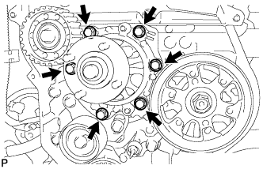

НАСОС СИСТЕМЫ ОХЛАЖДЕНИЯ > СНЯТИЕ |
| 1. DISCONNECT CABLE FROM NEGATIVE BATTERY TERMINAL |
| 2. DRAIN ENGINE COOLANT |
Ослабьте пробку сливного крана радиатора.

| *1 | Пробка радиатора | *2 | Бачок радиатора |
| *3 | Пробка сливного крана радиатора | *4 | Пробка сливного крана блока цилиндров |
Слейте охлаждающую жидкость, сняв крышку радиатора.
Ослабьте пробку сливного крана блока цилиндров.
Ослабьте пробку сливного крана блока цилиндров и слейте охлаждающую жидкость из двигателя.
| 3. REMOVE UPPER RADIATOR SUPPORT SEAL |
Освободите 13 фиксаторов и снимите верхнее уплотнение кронштейна радиатора.
| 4. REMOVE FRONT BUMPER COVER LOWER |
Remove the clip, 5 bolts and front bumper cover lower.
| 5. REMOVE NO. 1 ENGINE UNDER COVER SUB-ASSEMBLY |
Remove the 4 bolts.
 |
Unhook the engine under cover from the vehicle body as shown in the illustration.
| 6. REMOVE REAR ENGINE UNDER COVER ASSEMBLY |
Remove the 4 bolts and rear engine under cover.
| 7. REMOVE RESONATOR WITH AIR CLEANER CAP |
 |
Disconnect the sensor connector.
Detach the wire harness clamp.
Loosen the hose clamp and remove the resonator with air cleaner cap.
 |
Detach the 4 hook clamps, and then remove the air cleaner cap and resonator with air cleaner cap.
| 8. REMOVE NO. 1 RADIATOR HOSE |
 |
Detach the clamp and remove the No. 1 radiator hose.
 |
Remove the 2 nuts and hose clamp.
| 9. REMOVE NO. 2 RADIATOR HOSE |
 |
| 10. REMOVE RADIATOR RESERVOIR |
 |
Disconnect the reservoir hose from the upper side of the radiator tank.
Remove the 3 bolts and radiator reservoir.
| 11. REMOVE FAN SHROUD |
 |
Loosen the 4 nuts holding the fluid coupling fan.
Remove the vane pump V belt and the fan and generator V belt (See page Нажмите здесь).
 |
Remove the 2 bolts holding the fan shroud.
Remove the 4 nuts of the fluid coupling fan, and then remove the shroud together with the coupling fan.
Remove the fan pulley from the water pump.
| 12. DISCONNECT COMPRESSOR AND MAGNETIC CLUTCH |
 |
Remove the 4 bolts and idle pulley bracket.
 |
Disconnect the connector.
Remove the 3 bolts and disconnect the cooler compressor.
| 13. REMOVE NO. 2 IDLE PULLEY ASSEMBLY |
Remove the 2 bolts and Idle pulley bracket.
| 14. REMOVE TIMING BELT |
Remove the timing belt (See page Нажмите здесь).
| 15. REMOVE WATER PUMP ASSEMBLY |
|  |
Remove the 6 bolts and tension spring bracket.
Remove the water pump and gasket.